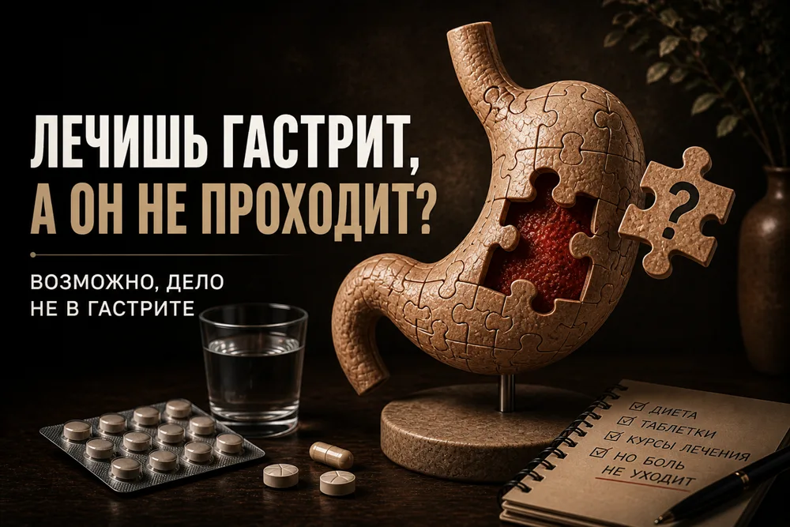

Гастрит не проходит: в чём ошибка



Вы лечите гастрит годами, а живот болит и изжога возвращается. Часто дело в том, что диагноз поставлен неправильно.
Гастрит — гистологический диагноз
Хронический гастрит — это гистологический диагноз. Он означает, что в слизистой есть воспалительные клетки, которые видит патолог под микроскопом. Сам по себе гастрит может протекать бессимптомно.
Диспепсия — боль, тяжесть, тошнота, изжога — может быть связана с гастритом, а может и нет. Связь между воспалением и симптомами слабая.
Диагноза без диагностики не бывает
Нельзя ставить гастрит «на ощупь» или по УЗИ. Нужна ФГДС с биопсией и тест на H. pylori: дыхательный тест, анализ кала на антиген или ПЦР.
У половины пациентов с диспепсией значимого воспаления нет. И наоборот: у многих людей с гистологическим гастритом нет жалоб.
Типичный сценарий: пациент годами принимает «защитники слизистой», ферменты и спазмолитики, меняет один препарат на другой, сидит на жёстких диетах — а симптомы возвращаются. Потому что диагноз был поставлен без эндоскопии, причина не найдена, а лечение назначено «на всякий случай».
Что маскируется под гастрит
- Функциональная диспепсия.
- ГЭРБ, в том числе с эпигастральной болью и тяжестью.
- Билиарный рефлюкс.
- СРК с болью в эпигастрии.
Каждое из этих состояний требует принципиально разной терапии. Поэтому смена одного препарата на другой без уточнения диагноза не работает.
Если лечение не помогает
Если стандартная терапия не дала эффекта за 4–8 недель, нужно пересмотреть диагноз, а не менять один препарат на другой. Проверьте ФГДС с биопсией, H. pylori, УЗИ; при необходимости — суточную pH-метрию и дыхательный тест.
Хронический гастрит лечат только при H. pylori и тяжёлой атрофии или метаплазии. В остальных случаях работают с конкретным механизмом симптомов.
Если причина не найдена, лечение «на всякий случай» не поможет: можно годами менять препараты, но боль будет возвращаться. Сначала — точный диагноз, потом — терапия.
Ваш врач Гондусов Д.В. 

Статья носит информационный характер и не заменяет консультацию врача. Не занимайтесь самодиагностикой.